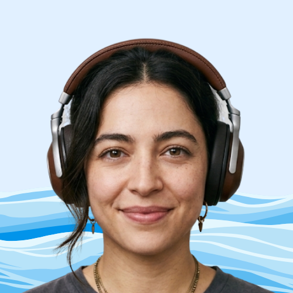

A música é muito mais do que som; é a linguagem universal que conecta gerações, atravessa fronteiras e traduz sentimentos que as palavras, sozinhas, não alcançam. Foi sob essa premissa que nasceu o Kamusic. Nossa história começa em Belo Horizonte, no coração de Minas Gerais, através da visão de Kazuya Ninomiya. Filho de imigrantes japoneses e movido por uma paixão genuína que floresceu desde sua juventude em 1980, Kazuya sempre acreditou que a educação musical deveria ser acessível a todos. O que começou como um projeto simples e heróico, mantido por anos com o suor de seu trabalho como caixa de supermercado, transformou-se hoje em um portal vibrante dedicado à memória e ao futuro da arte sonora. No Kamusic, nossa missão é ser a ponte entre o passado glorioso dos grandes compositores e a energia das novas gerações. Acreditamos que entender a trajetória de um autor ou a evolução de um gênero musical enriquece a experiência de quem ouve. Por isso, investimos em uma plataforma que une o rigor histórico à dinâmica do público jovem, oferecendo não apenas conteúdo educativo de alta qualidade, mas também uma curadoria exclusiva de produtos que celebram o universo musical. Do estudo acadêmico ao prazer de colecionar, o Kamusic é o ponto de encontro para quem não apenas escuta música, mas a vive intensamente. Seja bem-vindo ao nosso espaço, onde cada nota tem uma história para contar.
Marcos Gomes
A história do Kamusic não estaria completa sem mencionar Marcos da Silva Gomes , um jovem desenvolvedor e designer mineiro que cruzou o caminho de Kazuya Ninomiya de forma quase fátidica. Em 2022, enquanto Kazuya ainda lutava para manter o site no ar entre seus turnos no supermercado, Marcos era um cliente frequente que sempre puxava conversa sobre discos de vinil e raridades musicais. Estudante de sistemas de informação e apaixonado por jazz e bossa nova, Marcos percebeu que o site de Kazuya era um diamante bruto: o conteúdo era de uma profundidade acadêmica rara, mas a interface ainda parecia congelada nos anos 90. Certa tarde, após ouvir Kazuya desabafar sobre a dificuldade de adaptar o portal para os celulares modernos, Gomes fez uma proposta ousada: ele não queria apenas consertar o site, ele queria reconstruí-lo como colaborador voluntário, movido pelo respeito à resiliência de Kazuya. Foi Marcos Gomes quem trouxe o frescor visual que o Kamusic precisava para dialogar com a Geração Z. Ele implementou a arquitetura de e-commerce, criou a identidade visual minimalista que une a sobriedade japonesa à vibração brasileira e desenvolveu o sistema de "Linhas do Tempo Dinâmicas", que hoje é o maior sucesso entre os estudantes. Mais do que um programador, Marcos tornou-se o curador da parte tecnológica, garantindo que a paixão de Kazuya chegasse aos fones de ouvido de milhares de jovens sem ruídos. Hoje,Marcos da Silva Gomes é reconhecido como o Co-fundador Tecnológico do projeto.
Sua contribuição provou que, na música e nos negócios, o encontro entre a experiência de quem viveu a história e a energia de quem domina o futuro é o que cria as composições mais memoráveis.
